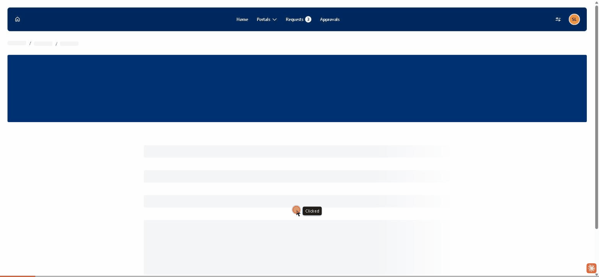
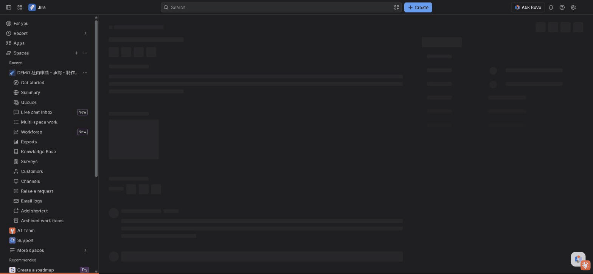

備品購入申請 テストレポート
Jira Service Management（DEMO 社内申請・承認・制作管理）／ 実施日 2026-11-10
総合結果
PASS
テスト対象
DEMO-5
確認項目
8 / 8 合格
申請〜承認
約 2 分
1. テスト概要
| 目的 | ポータルからの備品購入申請が、承認者の自動設定・金額による承認経路判定・SLA 計測を経て、承認後に対応待ちへ進むことを確認する |
|---|---|
| 環境 | Jira Cloud silverhomuradev.atlassian.net ／ プロジェクト DEMO（サービスデスク id 2） |
| 申請者・承認者 | Silver Homura LLC（silverhomuradev.com アカウント）。本テストは同一アカウントで申請と承認を行った（DEMO のワークフローで本人承認を許可済み） |
| 入力データ | リクエストタイプ「備品購入申請」／ 件名「PC購入」／ 金額 200,000 円 ／ 説明「業務用ノートPCの購入申請（テスト）」 |
| 操作方法 | Chrome ブラウザを画面操作（Claude in Chrome）し、各ステップを GIF で録画。結果は REST API で照合 |
2. ステップ1：備品購入申請（ポータル）
- カスタマーポータル（
/servicedesk/customer/portal/2）で「備品購入申請」を選択 - 件名「PC購入」、金額「200000」、説明を入力
- 「Send」で送信 → DEMO-5 が作成され、状態「Waiting for approval」になる

確認結果（申請直後）
| # | 確認項目 | 期待結果 | 実際の結果 | 判定 |
|---|---|---|---|---|
| 1-1 | 申請の作成 | DEMO に申請が作成される | DEMO-5（2026-11-10 03:40 JST） | PASS |
| 1-2 | 状態 | Waiting for approval | Waiting for approval | PASS |
| 1-3 | 承認者の自動設定（Automation） | Approvers に承認者が入る | Silver Homura LLC | PASS |
| 1-4 | 金額による承認経路判定 | 10 万円以上のため部長承認対象のコメント（内部） | 「[A1 承認経路] 金額 200000.0 円が閾値 100,000 円以上のため、部長承認の対象です。」（内部コメント） | PASS |
| 1-5 | 承認 SLA の開始 | 承認までの時間（目標 8h）が計測中 | 計測中（残り 7h 58m） | PASS |
3. ステップ2：承認（エージェント画面）
- Jira のエージェント画面で DEMO-5 を開く（「This request requires your approval」が表示される）
- 「Approve」をクリック
- 状態が「Waiting for support」に変わる

確認結果（承認後）
| # | 確認項目 | 期待結果 | 実際の結果 | 判定 |
|---|---|---|---|---|
| 2-1 | 承認の記録 | 承認者の判断が approved になる | Silver Homura LLC = approved（03:42 JST） | PASS |
| 2-2 | 状態遷移 | Waiting for support に進む | Waiting for support | PASS |
| 2-3 | SLA の引き継ぎ | 承認 SLA が完了し、解決までの時間（目標 24h）が開始 | 承認までの時間：完了（経過 2 分・違反なし）／ 解決までの時間：計測中（残り 23h 58m） | PASS |
4. 補足
- 確認結果は画面表示に加えて REST API（
/rest/api/3/issue、/rest/servicedeskapi/request/{key}/approval・/comment・/sla）で照合した。 - 申請者と承認者を別アカウントにした場合（顧客
silverhomurallc@gmail.comが申請 → silverhomuradev.com アカウントが承認）も、DEMO-4（150,000 円）で同じ結果を確認済み。詳細は 構築記録 の Step 5。 - 部長承認の判定は、現時点ではコメントで通知する方式（承認者の追加は未実装）。
録画はブラウザ操作の各アクション時点の画面を GIF 化したもので、連続した動画ではありません。